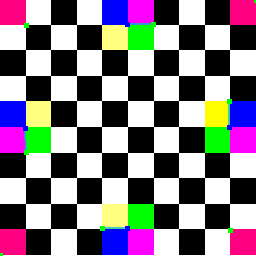
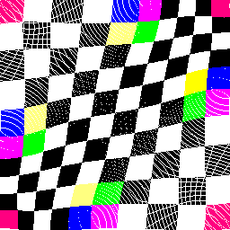
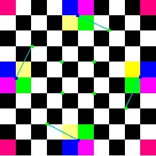
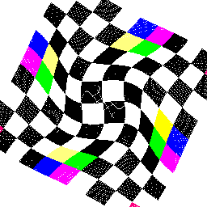
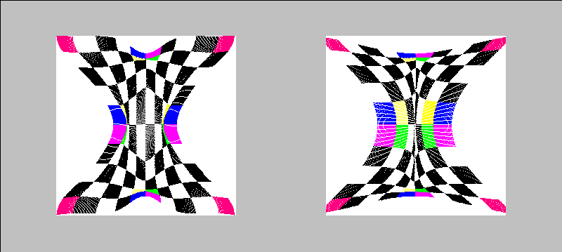
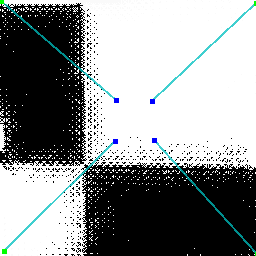
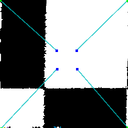

Inverse distance-weighted interpolation methods were originally proposed by Shepard and improved by a number of other authors, notably Franke and Nielson.
 
Transformations based on radial basis functions have proven to be a powerful tool in image warping.
 
From the figure below, we can simpliy feel that IDW is a little bit good at the fold-over control. On the other hand, the image warped by RBF is semed more flexible and ductile. (IDW(left) vs RBF(right))

In order to fix the white line problem of my warping class, I figure out a simple way to fill the white hole. By using the pixel near the target point, the color of the white hole can be easily approximated.
 